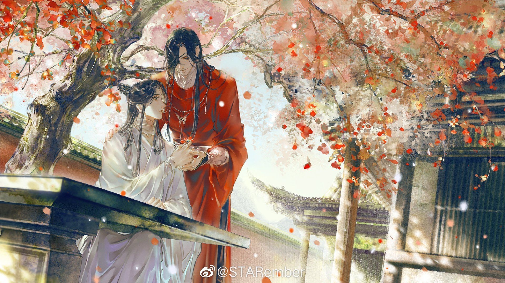
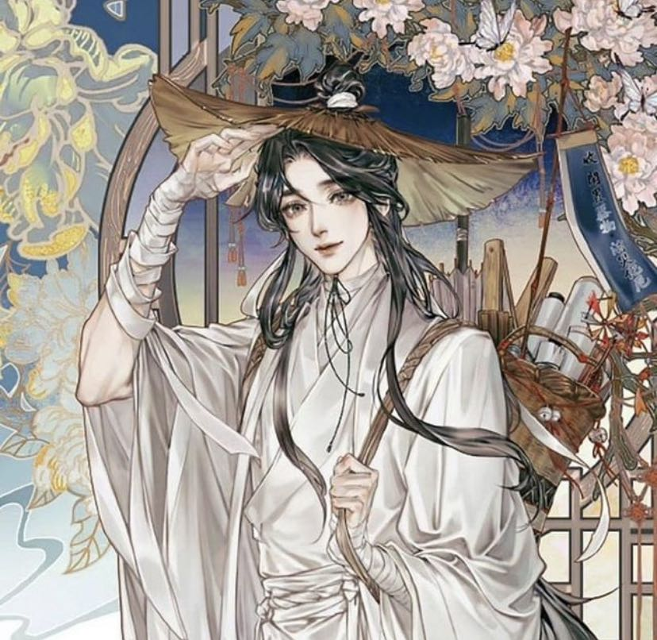
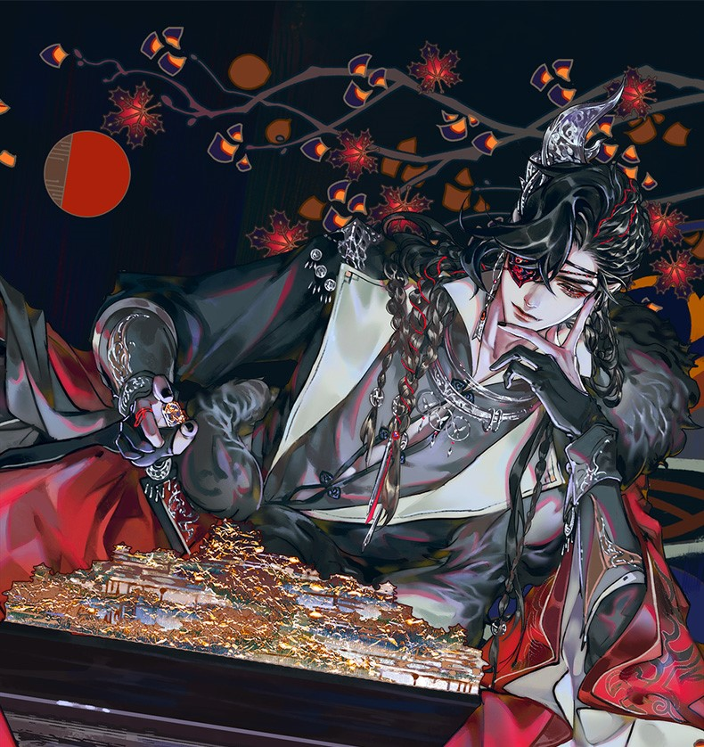

Heaven Official's Blessing (Chinese: 天官赐福, pinyin: Tiān Guān Cì Fú) is a Chinese novel series written by Mo Xiang Tong Xiu (Chinese: 墨香铜臭).
Eight hundred years ago, Xie Lian was the Crown Prince of the Xian Le kingdom. He was loved by his citizens and was considered the darling of the world. He ascended to the Heavens at a young age; however, due to unfortunate circumstances, was quickly banished back to the mortal realm. Years later, he ascends again only to be banished again a few minutes after his ascension.
Now, eight hundred years later, Xie Lian ascends to the Heavens for the third time as the laughing stock among all three realms. On his first task as a god thrice ascended, he meets a mysterious ghost who rules the ghosts and terrifies the Heavens, yet, unbeknownst to Xie Lian, this ghost king has been paying attention to him for a very, very long time.

Xie Lian, His Royal Highness the Crown Prince of Xianle, is the protagonist of Heaven Official's Blessing.
He was widely known throughout the Xianle nation as the beloved yet strange prince. Never showing interest in what was considered normal for a prince, he simply declared, "I want to save the common people!". Through practice, hard work, and insight beyond his years, he perfected his cultivation and ascended to the Heavens at the age of 17.[1]
After multiple unfortunate events, he was twice banished from the Heavens. 800 years later, he ascended for the third time.[1]

Also referred to as San Lang (三郎, Sān Láng), is the deuteragonist and main love interest in Heaven Official's Blessing.
He's a ghost of Supreme rank and the most notorious of the Four Great Calamities, widely known as Crimson Rain Sought Flower (血雨探花, Xuè Yǔ Tàn Huā).